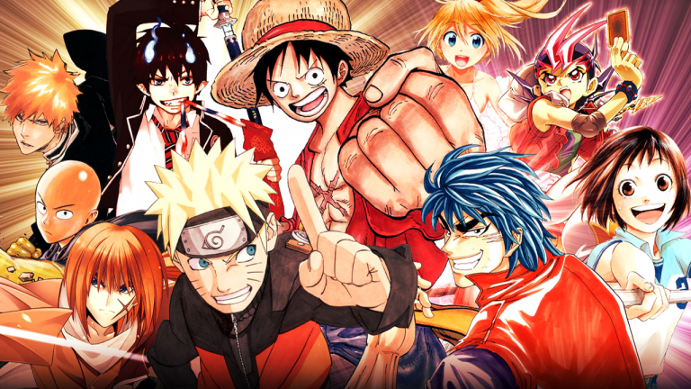
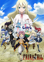
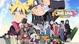
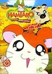
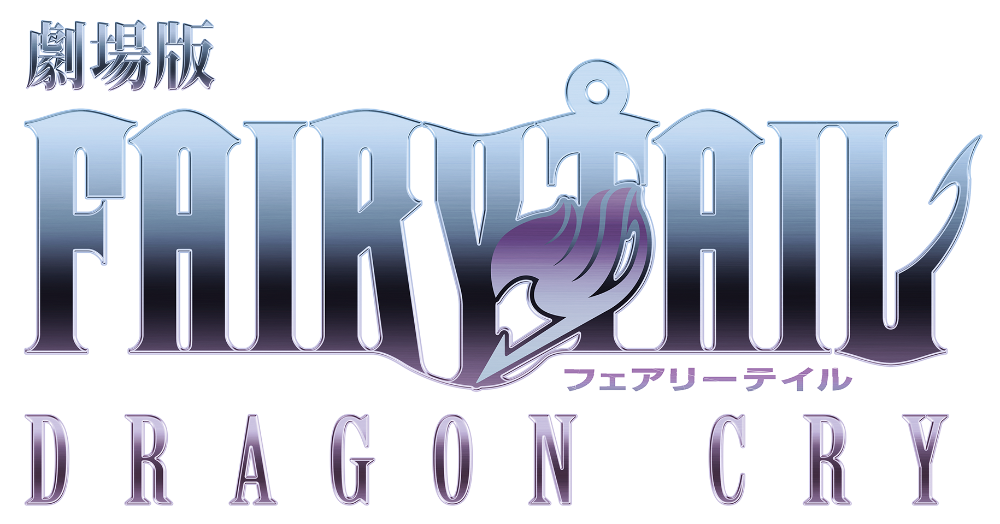

ACCUEIL
Bonjour!
Bienvenu sur le site l'Univers du manga,je vous présenterais quelques manga.
Mais avant,une petit présentation du manga.
Un manga (漫画?) est une bande dessinée japonaise.
Le mot « manga » est par ailleurs parfois utilisé pour désigner, par extension, une bande dessinée non japonaise respectant les codes des productions populaires japonaises ou pour nommer, par métonymie, d'autres produits visuels rappelant certaines de ces bandes dessinées (dessins animés, style graphique, etc.).
Les mangas traduits en langue française se lisent généralement dans le sens d'origine (de droite à gauche). En raison du rythme élevé de parution, la plupart des mangas sont dessinés en noir et blanc.
Les deux premiers pays les plus consommateurs de mangas sont le Japon et la France1,2,3,4,5.
La personne réalisant des mangas est appelée mangaka.
TABLEAU
| TITRE | GENRE | COLLECTIONS | SITE | |
|---|---|---|---|---|
| Naruto | action | Shonen | Netflix | |
|  | Fairy tail | aventure | Shonen | Netflix |
| Dragon ball | art_matiaux | shonen | pas trouvé | |
|  | Boruto | action | shonen | Netflix |
|  | Hamtaro | comedie | kodomo | Pas trouvé |
| Dan Machi | fantastique | shonen | Netflix |
Manga
L'univers de Naruto
Le manga Naruto se déroule dans un univers fantastique, dans lequel vivent des ninja.
Lhistoire s'articule principalement autour de Naruto,Sasuke,Kakashi et Sakura.
C'est quatre personnages forment l'équipe 7 dont Kakashi est le chef.
Le monde de Naruto est divisé en village, chaque village étant dirigé par des kage.
Naruto et ces compagnons vivent dans le village de konoha dirigé par le hokage.
Nous retrouvons aussi des créatures gigantesques dont la puissance et la force évolue en fonction du nombre de queue qu'il possède.
Le plus puissance des créatures possède neuf queues et se nomme kyûbi.
Les personnages
- Nous évoquerons que les personnages de l'équipe 7 et Kyûbi.
Naruto est un enfant qui a toujours vécu seul et méprisé des autres membre du village(car il est l'hote du démon renard(Kyûbi)).
Il rêve de devenir hokage pour être reconnu de tous et ne plus être méprisé des autres.
Sa vie change lorsqu'il intègre l'équipe 7 pour devenir un ninja. - Sasuke est l'ami de Naruto mais aussi son rival.
Contrairement à Naruto il est aimé de tous,mais pour lui rien ne compte à par sa vengeance.Il quitte le village et suis un chemin plutôt sombre et rempli de solitude. - Sakura est une jeune kunoichi du village de Konoha. Elle fait partie de l'équipe 7, composée à l'origine, en plus d'elle-même, de Naruto Uzumaki, Sasuke Uchiwa et de leur professeur Kakashi Hatake.
- Kakashi est le chef de léquipe 7. Quand il était petit il était un membre de l'équipe dirigé par le père de Naruto.
- Kyûbi est démon renard puissant, possédant neuf queues.
Il destait les hommes car ils ne coivent que sa puissance.
Le jour de la naissance de Naruto il est scellé dans le corps de Naruto ce qui fait de Naruto son Hôte.
L'univers de Fairy tail
L’histoire se focalise principalement sur les missions effectuées par l’une des équipes de la guilde Fairy Tail, composée de Natsu Dragnir (chasseur de dragon de feu), Lucy Heartfilia (constellationniste) et Happy (un Exceed, chat bleu pouvant se faire pousser des ailes, voler et parler), qui seront très vite rejoints par Erza Scarlett (mage chevalier) et Grey Fullbuster (Mage de glaces puis plus tard Chasseur de démons de Glace), deux autres membres de la fameuse guilde. Ils sont rejoints au cours de l'aventure par Carla (une chatte blanche Exceed, comme Happy), Wendy (chasseuse de dragon céleste), et par bien d'autres.
Les personnages
Natsu aussi appelé "La Salamandre", est le personnage principal du manga et le petit frère défunt puis ressuscité de Zeleph, l'antagoniste principal de l'anime. Membre de la guilde de Fairy Tail, c’est un mage de feu au tempérament ardent, atteint du mal des transports. Il utilise une magie oubliée qui fait de lui un chasseur de dragon (ou Dragon Slayer). C’est aussi un adolescent orphelin à la recherche de son père adoptif, un dragon alors disparu, nommé Ignir, qui a appris à Natsu la magie du chasseur de dragon du feu. Magie qui lui permet de lutter contre le mal en compagnie de ses amis et de certains de ses anciens ennemis devenus ses alliés tel que Sting Youclif ou Jellal Fernandez . Au bord de la mort, il se relève toujours grâce à sa volonté de les protéger.
Lucy âgée de 17 ans, rêve de faire partie de la plus célèbre guilde du royaume de Fiore : Fairy Tail, qu'elle va pouvoir intégrer grâce à Natsu. C’est une constéllationniste pouvant invoquer des esprits à l'aide de clés magiques correspondant chacune à une constellation. Son caractère est plus calme que celui de Natsu mais elle peut se montrer effrayante. Originaire d'une famille particulièrement aisée, elle n'en a pourtant jamais tiré profit quand elle faisait partie de la guilde, si ce n'est des ennuis. Elle relate souvent les aventures qu'elle a vécues au côté de Natsu, Happy, Erza et Grey dans des lettres adressées à sa mère défunte (a perdu la vie) une fois revenue de mission. L'emblème de Fairy Tail se situe sur sa main droite et est de couleur rose. Lucy écrit aussi un roman,"Les aventures d'Iris", pendant son temps libre qu'elle ne laisse personne lire. Mais il sera primé dans le dernier tome de Fairy Fail (tome 63).
Elsa Jeune, elle a été enlevée à son village Rosemary comme d'autres enfants de son âge afin de travailler en tant qu’esclave à la construction de la Tour du Paradis. C’est là où elle rencontre ses amis: Jellal, Miliana, Shaw, Simon et Wally ainsi que Rob. Expulsée de la tour par Jella, possédé par une entité maléfique, elle décide d’intégrer Fairy Tail, le groupe de combattant dont Rob lui avait parlé lors de leur captivité. Elle est amoureuse de Jellal depuis son enfance. Depuis, elle est devenue mage de rang S à Fairy Tail pour ses capacités au combat. Sa magie lui permet de changer d'armure et d'arme à volonté, ce qui change également sa force de frappe, sa défense et sa vitesse en fonction. Elle a acquis le surnom de Titania, la Reine des Fées pour sa puissance. Erza est un atout pour la guilde, mais est crainte des membres hors rang S. En effet, sa participation à une bagarre peut s'avérer dangereuse, Erza ne sachant pas se retenir
Grey Après la mort de ses parents, tués par Déliora, démon créé par Zeleph, il est recueilli par Oul, sa maîtresse auprès de qui il apprend la magie de la glace constructive, tout comme Léon. Oul a enfermé Déliora dans la glace grâce à un sort, la glace éternelle, qui consiste à transformer son corps en glace. Après la disparition de sa maîtresse, il intègre la guilde Fairy Tail. Bien que très souvent en rivalité et en compétition avec Natsu, les deux garçons se respectent et s'apprécient mutuellement. Cela ne les empêche pas d'être calmés par Erza, qui sait se montrer stricte à leur égard. Il prend la mauvaise habitude de se déshabiller (problème d'exhibitionnisme), se retrouvant parfois en caleçon sans s'en apercevoir et embarrassant ses camarades. Néanmoins, il sait se montrer sérieux lorsqu'il s'agit d'engager un combat. Au fur et à mesure de la série, il finit par perdre l'habitude de se déshabiller. C'est l'un des seuls personnages à être franc et direct avec son entourage, n'hésitant pas à exprimer davantage ce qu'il pense, même si cela blesse les autres (comme critiquer le plan mal dessiné par Mirajane lors de la reconstruction de la guilde, puis tentant de se rattraper).